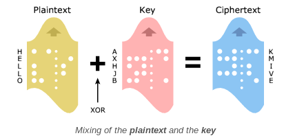
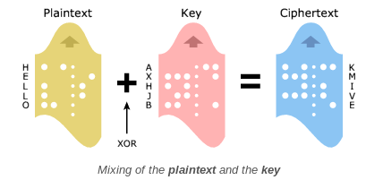

Wonderful XOR
In cryptography, the one-time pad (OTP) is an encryption technique that cannot be cracked.

The Vernam Cipher is based on the principle that each plaintext character from a message is 'mixed' with one character from a key stream.
In cryptography, the one-time pad (OTP) is an encryption technique that cannot be cracked.

The Vernam Cipher is based on the principle that each plaintext character from a message is 'mixed' with one character from a key stream.